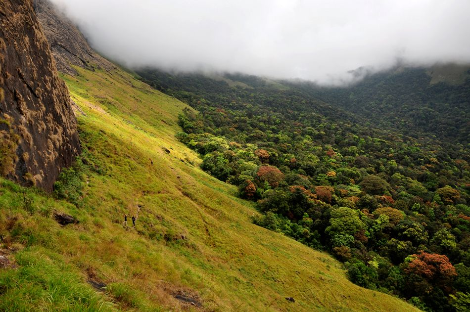

A conservation initiative in the foothills of Western Ghats

Indians always considered mountains, rivers and forests as repositories of the sacred. Biodiversity was always considered as a precondition for human survival. But unfortunately for past 15000 years, the engine of our growth was kill, cut and burn. Since 1947 river valley projects, mining, agriculture, townships, industries, roads and other similar ‘developmental’ activities have destroyed a staggering 5.3 million hectare of forest area in India. Effective closed-canopy forest in India today is as low as 4 percent out of which hardly one percent is fully protected. Even forests protected by laws are under pressure. More than two-thirds of India’s 650-plus protected forests have settlements that support an estimated four million people. Another 150 million lives around forests and suffer frequent losses to wildlife. Species become extinct even before they are described. If the trend continues we will be poorer in spirit, health, and even in our pocketbooks. It is a pertinent need of the time to protect the remaining forest of our country for the welfare of future generations. Thus the core objective of this society is to conserve the remaining forests through awareness creation among the public and training volunteers and forest staff to safeguard the Protected Areas of the country.